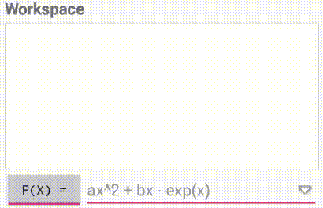
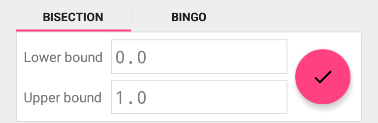
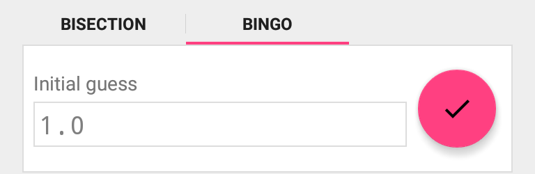
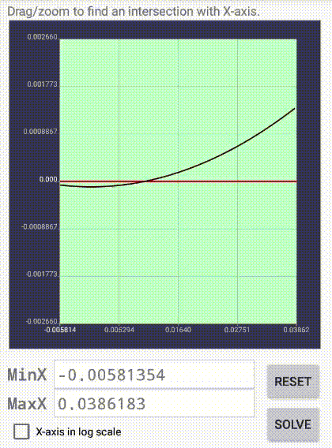
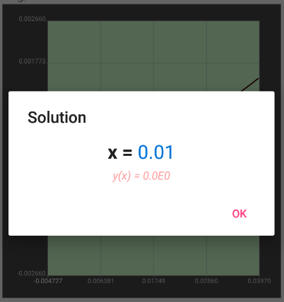

Basic Workflow
1. Define the function and constants
To solve equation F(x)=0, input the function in the text box and press the red button to add it.

When the equation is Ready to solve, continue to...
2. Set solve mode and parameters
The application may search the root:
- in an interval (Bisection mode), or
- around a certain value (Bingo mode).


Set the parameters if needed. Then click the red button to..
3. Plot and solve
Utilize the plot to check and adjust the search interval.


Locate exactly one zero-crossing point and press Solve button to get result.